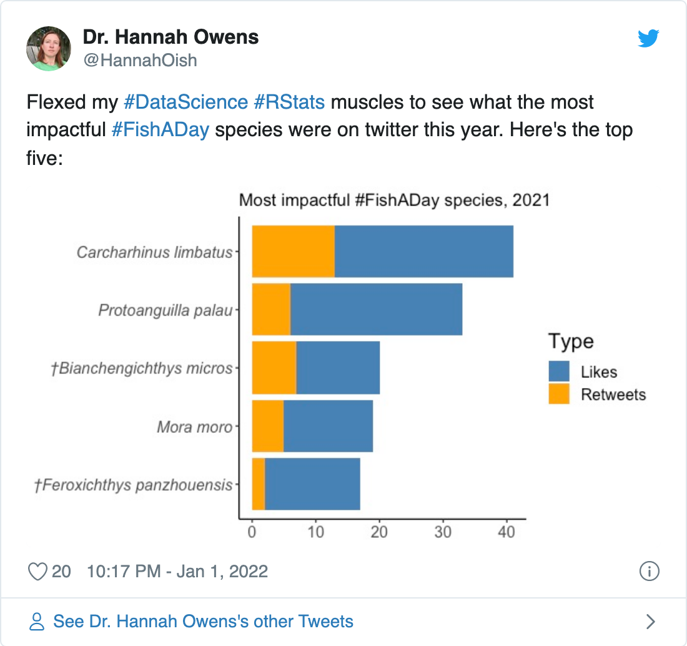
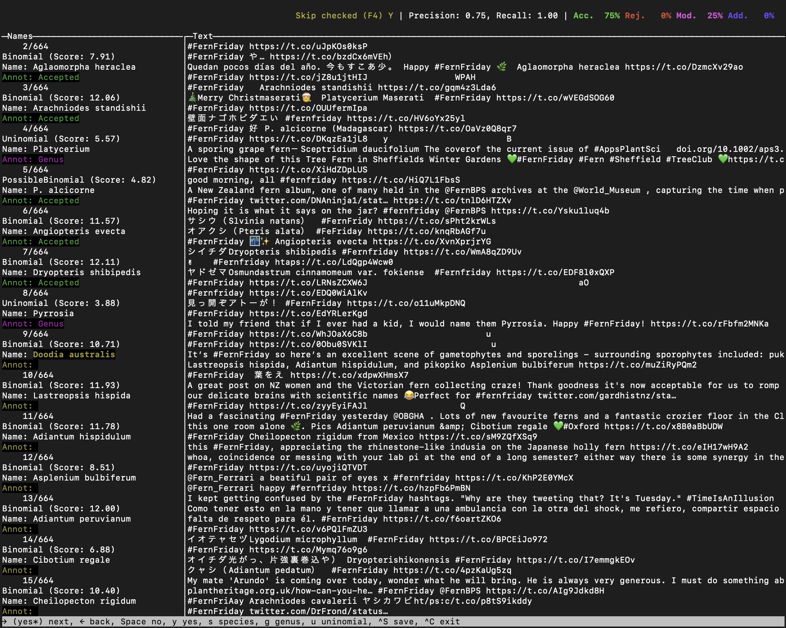

In which I answer the burning question on everybody’s minds: what was the most popular fern of 2021??
I show how to analyze #fernfriday tweets from 2021, including
snscrapergntaggerjsonliteFigure 1: Image by jewelie108 on pixabay.
One of the saving graces of twitter is the existence of things like #fernfriday and other hashtags of people’s favorite organisms.
Recently, @HannahOish posted this brief analysis of the #FishADay hashtag:

Upon seeing it, I immediately knew what I had to do next: find out the most popular fern species of #fernfriday in 2021!
First let’s load some packages.
There are at least two R packages to get twitter data in R, rtweet and tweetR
There is just one problem: they rely on the official twitter API, which is limited to tweets from the past week to 10 days or so 1.
So I will get around this problem by using snscrape, a program written in python that can help us obtain twitter data without using the API 2.
snscrape can be installed using pip.
My preferred method for handling python is to use the conda
environment manager. We can use
pip within conda to install snscrape by writing an
environment.yml file like this (thanks to @hansheng0512):
name: tweets-scraping
dependencies:
- python=3.8
- pip=21.1.3
- pip:
- git+https://github.com/JustAnotherArchivist/snscrape.gitOnce that is in your working directory, run this to create the environment:
conda env create -f environment.ymlNow snscrape should be installed and ready to use!
Since snscrape is a command-line interface (CLI), the
normal way to use it would be to type commands from the command line.
But this is an R blog, so let’s run it from R using the
system() command 3 4.
# Set some variables, in case we want to modify the search later
DATE_START <- "2021-01-01"
DATE_END <- "2021-12-31"
HASHTAG <- "fernfriday"
JSON_FILENAME = "ff-2021-tweets"
# Compose the command for snscrape to retrieve tweets
command <- glue::glue('snscrape --jsonl --since {DATE_START} twitter-hashtag "{HASHTAG} until:{DATE_END}" > {JSON_FILENAME}.json')
# Run the command inside the conda env
system(
glue::glue(
"source ~/miniconda3/etc/profile.d/conda.sh ;
conda activate tweets-scraping ;
{command} ;
conda deactivate")
)
Now the tweets have been downloaded in JSON format to
ff-2021-tweets.json.
We can load
the tweets into R with the jsonlite package.
Found 500 records...
Found 1000 records...
Found 1345 records...
Imported 1345 records. Simplifying...Let’s take a peek at the data.
glimpse(ff_tweets_raw)
Rows: 1,345
Columns: 28
$ `_type` <chr> "snscrape.modules.twitter.Tweet", "snscrape…
$ url <chr> "https://twitter.com/bmoandkmo/status/14766…
$ date <chr> "2021-12-30T23:31:27+00:00", "2021-12-30T23…
$ content <chr> "the last #FernFriday of this year\n\nAmazi…
$ renderedContent <chr> "the last #FernFriday of this year\n\nAmazi…
$ id <dbl> 1.476697e+18, 1.476690e+18, 1.476681e+18, 1…
$ user <df[,23]> <data.frame[23 x 23]>
$ replyCount <int> 0, 0, 1, 0, 0, 0, 0, 1, 0, 0, 0, 0, 0, …
$ retweetCount <int> 1, 0, 1, 0, 0, 1, 0, 0, 5, 1, 0, 0, 3, 1, 1…
$ likeCount <int> 6, 3, 22, 4, 6, 7, 4, 35, 21, 27, 14, 15, 3…
$ quoteCount <int> 0, 0, 0, 0, 0, 0, 0, 1, 0, 0, 0, 0, 0, 0, 0…
$ conversationId <dbl> 1.476697e+18, 1.476690e+18, 1.476681e+18, 1…
$ lang <chr> "en", "und", "und", "und", "und", "und", "u…
$ source <chr> "<a href=\"https://mobile.twitter.com\" rel…
$ sourceUrl <chr> "https://mobile.twitter.com", "https://mobi…
$ sourceLabel <chr> "Twitter Web App", "Twitter Web App", "Twit…
$ outlinks <list> <NULL>, <NULL>, <NULL>, <NULL>, <NULL>, <NU…
$ tcooutlinks <list> <NULL>, <NULL>, <NULL>, <NULL>, <NULL>, <N…
$ media <list> [<data.frame[2 x 3]>], [<data.frame[1 x 3]…
$ retweetedTweet <lgl> NA, NA, NA, NA, NA, NA, NA, NA, NA, NA, NA…
$ quotedTweet <df[,28]> <data.frame[23 x 28]>
$ inReplyToTweetId <dbl> NA, NA, NA, NA, NA, NA, NA, NA, NA, NA, NA,…
$ inReplyToUser <df[,23]> <data.frame[23 x 23]>
$ mentionedUsers <list> <NULL>, <NULL>, <NULL>, <NULL>, <NULL>,…
$ coordinates <df[,3]> <data.frame[23 x 3]>
$ place <df[,6]> <data.frame[23 x 6]>
$ hashtags <list> "FernFriday", "FernFriday", <"FernFriday", …
$ cashtags <lgl> NA, NA, NA, NA, NA, NA, NA, NA, NA, NA,…There’s a lot of stuff in there! Let’s clean up the data a bit and just keep the useful bits.
ff_tweets <-
ff_tweets_raw %>%
as_tibble() %>%
select(
date, url, user, id,
content = renderedContent,
lang, coordinates, place,
contains("count")
) %>%
# Extract data from nested dataframes
mutate(
user = select(user, username, followersCount),
place = select(place, country),
coordinates = select(coordinates, longitude, latitude)
) %>%
unnest(c(user, place, coordinates)) %>%
clean_names()
ff_tweets
# A tibble: 1,345 × 14
date url username followers_count id content lang
<chr> <chr> <chr> <int> <dbl> <chr> <chr>
1 2021-12-30T23… http… bmoandk… 79 1.48e18 "the l… en
2 2021-12-30T23… http… ALULUAL… 203 1.48e18 "#Fern… und
3 2021-12-30T22… http… vatanek… 740 1.48e18 "#Fern… und
4 2021-12-30T21… http… ALULUAL… 203 1.48e18 "#Fern… und
5 2021-12-30T19… http… ALULUAL… 203 1.48e18 "#Fern… und
6 2021-12-30T17… http… ALULUAL… 203 1.48e18 "#Fern… und
7 2021-12-30T15… http… ALULUAL… 203 1.48e18 "#Fern… und
8 2021-12-24T20… http… duckinw… 1307 1.47e18 "Wishi… en
9 2021-12-24T17… http… helecho… 208 1.47e18 "¡Feli… pt
10 2021-12-24T14… http… KOKESHI… 1506 1.47e18 "＃Fer… en
# … with 1,335 more rows, and 7 more variables: longitude <dbl>,
# latitude <dbl>, country <chr>, reply_count <int>,
# retweet_count <int>, like_count <int>, quote_count <int>That’s better.
So getting our twitter data wasn’t that hard, now just to find all the fern species…
Uh-oh. This is easier said than done. Twitter doesn’t have a JSON field for fern species!
Luckily this post does have some biological content. For
this task I will use gntagger.
gntagger is a fantastic little CLI written in GO that
handles exactly this sort of situation: it automatically detects
species names in raw text 5.
Installation is quite simple
as described in the gntagger docs, so I won’t go into
that any more here.
gntagger requires a plain-text file as input, so let’s
write out the tweets to a plain text file with one line per tweet:
ff_tweets %>%
# Replace line breaks with spaces so we get one tweet per line
mutate(content = str_replace_all(content, "\n", " ")) %>%
pull(content) %>%
write_lines("ff-2021-tweet-content.txt")
Now, open the text file with gntagger 6:
gntagger ff-2021-tweet-content.txtYou should see a screen that looks like this:

gntagger takes a “android” approach to tagging species
names. It first uses its own algorithm to automatically identify all
possible species names, then it has a simple
user interface so the user can confirm or reject each candidate name
rapidly. According to the gntagger
docs, you should be able to get through about “4000 names spread
over 600 pages in about 2 hours”. It took me around 10–15 min. for this
dataset, which included 664 candidate names to process.
It saves the intermediate output to a folder named after the input
file, in this case ff-2021-tweet-content.txt_gntagger.
I recommend trying out gntagger to see how it works—it
definitely looks great for parsing names from old literature!
But you don’t have to go through all of the names yourself. In fact,
gntagger’s initial “guesses” are pretty darn good, and can
be used as-is for a rough analysis. Or, you can download the cleaned up
version from FIXME: ADD LINK.
Let’s read in the gntagger results, which are again
JSON:
ff_taxa_raw <- jsonlite::fromJSON("ff-2021-tweet-content.txt_gntagger/names.json")
ff_taxa <- ff_taxa_raw[["names"]] %>%
as_tibble() %>%
# I'll call the name output by gntagger "taxon", since
# not all of them are species
select(type, annotation, taxon = name, start, end)
ff_taxa
# A tibble: 630 × 5
type annotation taxon start end
<chr> <chr> <chr> <int> <int>
1 Binomial Accepted Elaphoglossum crinitum 430 452
2 Binomial Accepted Aglaomorpha heraclea 1230 1250
3 Binomial Accepted Arachniodes standishii 1325 1347
4 Uninomial Genus Platycerium 1398 1409
5 PossibleBinomial Accepted P. alcicorne 1562 1574
6 Binomial Accepted Angiopteris evecta 2457 2475
7 Binomial Accepted Dryopteris shibipedis 2508 2529
8 Uninomial Genus Pyrrosia 2914 2923
9 Binomial Accepted Doodia australis 3161 3178
10 Binomial Accepted Lastreopsis hispida 3189 3209
# … with 620 more rowsA bit about the column names we are reading in from
gntagger:
type is something automatically defined by
gntagger. I’m not quite sure what it means… but I’m
guessing “Binomial” indicates that the name is a species.annotation is the annotation I selected during the
tagging process. It includes values “Accepted”, “Genus”, “NotName”,
“Species”, and “Uninomial”. It wasn’t totally clear to me how to apply
these during the tagging part. I mostly just hit the forward arrow for
names that looked like species, so those are annotated as “Accepted”.
Towards the end I noticed I could select “Species”, so a few are
annotated as “Species” instead of “Accepted” 7.start and end indicate the character
position in the raw text matching the start and end of the name.The next is to join the tibble of species we’ve found with
gntagger back to the tibble of tweets.
My original plan of attack for this was to use the start
and end fields… but it didn’t work out so well because
there was some non-trivial difference in the way gntagger
counts characters and the way I was counting characters with R.
So time for Plan B: let’s use the list of species names from
gntagger as a grep
pattern, and extract matching strings from the tweets.
First, let’s compose a grep pattern that will match on any species name in the tweets:
species_pattern <-
ff_taxa %>%
# Only use names that are probably species (not genus, etc)
filter(type == "Binomial") %>%
# Extract names as character vector
pull(taxon) %>%
unique() %>%
sort() %>%
# Paste these together separated by \\b|
# - the \\b part means to only match on whole words
# - the | part means "or"
paste0(collapse = "\\b|\\b") %>%
paste0("\\b", .) %>%
paste0(., "\\b")
# Take a peek at our pattern
substr(species_pattern, 1, 50)
[1] "\\bAbrodictyum laetum\\b|\\bActiniopteris australis\\b"Next, use the pattern to extract species names from the tweets:
ff_tweets_species <-
ff_tweets %>%
mutate(
species = str_match_all(content, species_pattern) %>%
map(~.[,1]) # converts str_match_all() output to character vector
) %>%
unnest(species) # drops any tweets with no matching species
Let’s take a peek at the results.
select(ff_tweets_species, content, species)
# A tibble: 417 × 2
content species
<chr> <chr>
1 "Wishing all a happy, safe and peacefull #FernFriday Chris… Elapho…
2 "Quedan pocos días del año.\n今年も残すところあと少し。\n\… Aglaom…
3 "#FernFriday \n\nArachniodes standishii https://t.co/gqm4z… Arachn…
4 "#FernFriday 🌃🌿✨\n\nAngiopteris evecta https://t.co/Xvn… Angiop…
5 "シビイタチシダ Dryopteris shibipedis #Fernfriday https://… Dryopt…
6 "It’s #FernFriday so here’s an excellent scene of gametoph… Doodia…
7 "It’s #FernFriday so here’s an excellent scene of gametoph… Lastre…
8 "It’s #FernFriday so here’s an excellent scene of gametoph… Adiant…
9 "It’s #FernFriday so here’s an excellent scene of gametoph… Asplen…
10 "Had a fascinating #FernFriday yesterday @OBGHA . Lots of … Adiant…
# … with 407 more rowsYay! We’ve got fern species names mapped to tweets (and user ID, etc). Notice that some tweets now appear duplicated, since our data are have one row per fern species mentioned, and some tweets may include multiple species. Also, the overall number of tweets has dropped quite a bit because we filtered out any without a detected species name.
OK, we can finally analyze the data and see who is the most popular fern of 2021!
Like any good data analysis, let’s check the distribution of the data first.
ff_tweets_species %>%
count(species) %>%
ggplot(aes(x = n, fill = n == 1)) +
geom_histogram(bins = 20) +
labs(fill = "Singleton") +
scale_fill_brewer(palette = "Dark2") +
labs(x = "n species", y = "n tweets")
Figure 2: Histogram of species occurrences in tweets
So the vast majority of species are only tweeted about once (“singletons” in the plot), then there’s a longer tail of a much smaller number of species that receive multiple tweets. Sort of like ecology—common species are rare, and rare species are common. Neat.
Now that we have a feel for how the data are distributed, let’s see who are the rare species with multiple tweets. It’s possible that some users are tweeting the same species multiple times, and that seems sort of unfair right? So we will just consider one tweet per species per user, and look at the top 10.
ff_tweets_species %>%
# Only allow one "vote" per species per user
select(species, username) %>%
unique() %>%
# Just look at the top 10
# fct_lump_n() lumps the remainder into "Other"
mutate(species = fct_lump_n(species, n = 10)) %>%
# Exclude "Other"
filter(species != "Other") %>%
count(species) %>%
mutate(species = fct_reorder(species, n)) %>%
ggplot(aes(x = n, y = species)) +
geom_col() +
labs(x = "n users tweeting") +
theme(axis.title.y = element_blank())
Figure 3: Top 10 species by number of users tweeting
AND WE HAVE A WINNER: Osmunda regalis, by far!! Fitting for royalty I guess?
What about the most popular genera?
ff_tweets_species %>%
# Split species names into genus and specific epithet
separate(
species, into = c("genus", "specific_epithet"), sep = " ",
fill = "right", extra = "drop") %>%
# Exclude abbreviated genera ("P.", etc)
mutate(n_genus_char = nchar(genus)) %>%
filter(n_genus_char > 3) %>%
# Only allow one "vote" per species per user
select(genus, username) %>%
unique() %>%
# Just look at the top 10
# fct_lump_n() lumps the remainder into "Other"
mutate(genus = fct_lump_n(genus, n = 10)) %>%
# Exclude "Other"
filter(genus != "Other") %>%
count(genus) %>%
mutate(genus = fct_reorder(genus, n)) %>%
ggplot(aes(x = n, y = genus)) +
geom_col() +
labs(x = "n users tweeting") +
theme(axis.title.y = element_blank())
Figure 4: Top 10 genera by number of users tweeting
Now Osmunda slides a bit as Asplenium makes up some ground.
This being twitter, we need to look at some social networking performance indicators… How about number of retweets, etc? My end goal here is to use a facet plot with one facet per indicator, so first I need to convert the data into long form.
ff_tweets_species_long <-
ff_tweets_species %>%
# Convert to long format for facet plotting
select(contains("_count"), species) %>%
select(-followers_count) %>%
pivot_longer(names_to = "count_type", values_to = "count", -species) %>%
group_by(count_type) %>%
nest() %>%
# Within each indicator type, keep only the top 10 species (include ties)
mutate(data = map(data, ~slice_max(., order_by = count, n = 10))) %>%
unnest(data) %>%
ungroup()
ff_tweets_species_long
# A tibble: 54 × 3
count_type species count
<chr> <chr> <int>
1 reply_count Angiopteris evecta 13
2 reply_count Ophioglossum vulgatum 9
3 reply_count Matonia pectinata 6
4 reply_count Botrychium lunaria 4
5 reply_count Athyrium filix-femina 4
6 reply_count Dipteris conjugata 4
7 reply_count Alsophila firma 4
8 reply_count Pyrrosia sheareri 4
9 reply_count Asparagus setaceus 3
10 reply_count Polystichum lonchitis 3
# … with 44 more rowsThe next step is to order species as a factor within each count type.
It turns out this isn’t possible with ggplot2 alone… we
need to use tidytext::reorder_within(). For more details on
that, check out Julia Silge’s
excellent blog post`.
ff_tweets_species_long %>%
mutate(
species = reorder_within(species, count, count_type)
) %>%
ggplot(aes(x = count, y = species, fill = count_type)) +
geom_col(show.legend = FALSE) +
scale_y_reordered() +
facet_wrap(~count_type, scales = "free") +
scale_fill_brewer(palette = "Dark2")
Figure 5: Top #fernfriday species by social networking indicator
Many of these look quite similar, probably because the number of retweets and likes are correlated.
I wonder what is the content of some of these most popular tweets?
# Look at the username and content of the top three most retweeted tweets
ff_tweets_species %>%
slice_max(order_by = retweet_count, n = 3) %>%
select(username, content)
# A tibble: 3 × 2
username content
<chr> <chr>
1 ja_pelosi "Happy #FernFriday! For today's #51WeeksOfPteridophytes I…
2 ja_pelosi "#FernFriday! #51WeeksOfPteridophytes! There are about 11…
3 ja_pelosi "How is it already #FernFriday?! There are around 157 spe…All from @ja_pelosi, who has been posting informative threads about one fern family per week at #51WeeksOfPteridophytes. Nice going @ja_pelosi!
So that’s the story for the top fern species of #fernfriday.
But who are the most active #fernfriday tweeters?
ff_user_count <-
ff_tweets %>%
count(username) %>%
mutate(username = fct_reorder(username, n))
ggplot(ff_user_count, aes(x = n, y = username)) +
geom_col(aes(fill = n == 1)) +
# Only label the top 10
geom_label_repel(
data = slice_max(ff_user_count, order_by = n, n = 10),
aes(label = username),
force = 3,
box.padding = 0.5,
min.segment.length = 0,
max.overlaps = Inf,
direction = "y") +
# ... plus me
geom_label_repel(
data = filter(ff_user_count, username == "joel_nitta"),
fill = "light blue",
min.segment.length = 0,
aes(label = username)) +
scale_fill_brewer(palette = "Dark2") +
scale_x_continuous(expand = c(0,0)) +
labs(x = "n tweets", fill = "Singleton") +
theme(
axis.text.y = element_blank(),
axis.ticks.y = element_blank(),
legend.position = "bottom")
Figure 6: Number of #fernfriday tweets per user
Again we see a similar pattern to species: there are a small number of very regular #fernfriday tweeters, then a long tail of those who use the hashtag only occasionally… or just once (ahem)!
The most prolific #fernfriday tweeter, @ALULUALULU_M, is a photographer who clearly has some great taste in plants.
Well I might not have the most #fernfriday tweets, but I think I’m definitely in the running for best #fernfriday blogpost :)
For the free version, anyways↩︎
This may not be within twitter’s terms of service, so use at your own discretion↩︎
A good way to limit the number of
hits when you are testing code is with the --max-results
option, e.g., --max-results 10↩︎
Again, inspired by @hansheng0512’s code↩︎
OK it was probably designed more with old biodiversity literature in mind and not twitter, but it works fine either way!↩︎
You may need to execute this with
./gntagger if you didn’t make gntagger
executable everywhere by putting it on your PATH↩︎
I actually think using a single variable for both taxonomic status (“Accepted”) and rank (“Species”, “Genus”, etc) is rather confusing, and have filed an issue about this↩︎
If you see mistakes or want to suggest changes, please create an issue on the source repository.
Text and figures are licensed under Creative Commons Attribution CC BY 4.0. Source code is available at https://github.com/joelnitta/joelnitta-home, unless otherwise noted. The figures that have been reused from other sources don't fall under this license and can be recognized by a note in their caption: "Figure from ...".
For attribution, please cite this work as
Nitta (2022, Jan. 24). #fernfriday 2021. Retrieved from https://joelnitta.com/friday-ferns-2021
BibTeX citation
@misc{nitta2022#fernfriday,
author = {Nitta, Joel},
title = {#fernfriday 2021},
url = {https://joelnitta.com/friday-ferns-2021},
year = {2022}
}